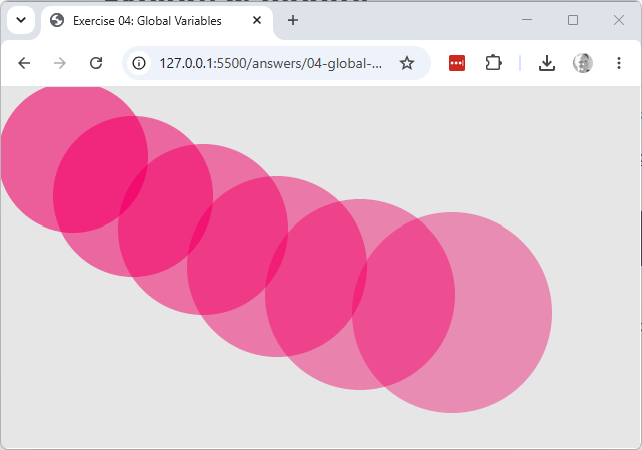

Explore & modify
Working copy: exercises/04-global-variables/.
-
Modify the sketch so that each circle drawn is 10 pixels larger in diameter than the last one, and 10 less opaque — clicking repeatedly should build up a stack of circles that grows and fades as it goes.
Hint:
diameterandopacityare declaredconst, which can't be reassigned — change both toletfirst. Then, insidemousePressed(), after drawing the circle, update each variable with a line like:diameter = diameter + 10;This reads the current value of
diameter, adds10to it, and assigns the result straight back intodiameter— the same assignment statement from earlier in this lesson, just with the variable appearing on both sides of the=.
